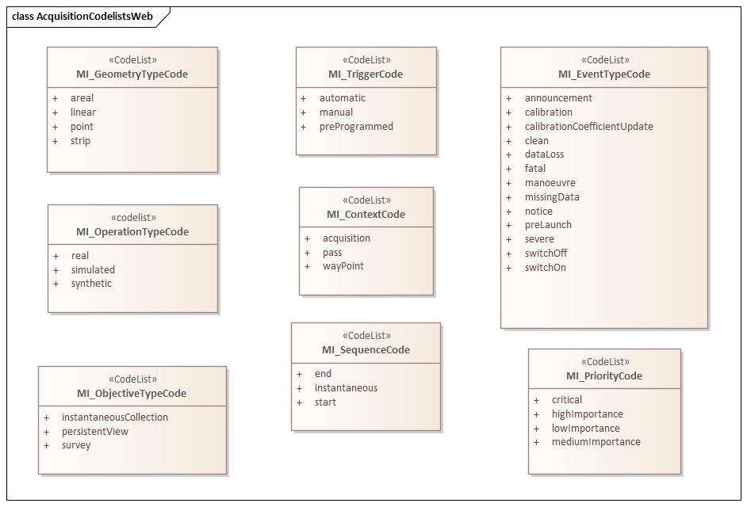
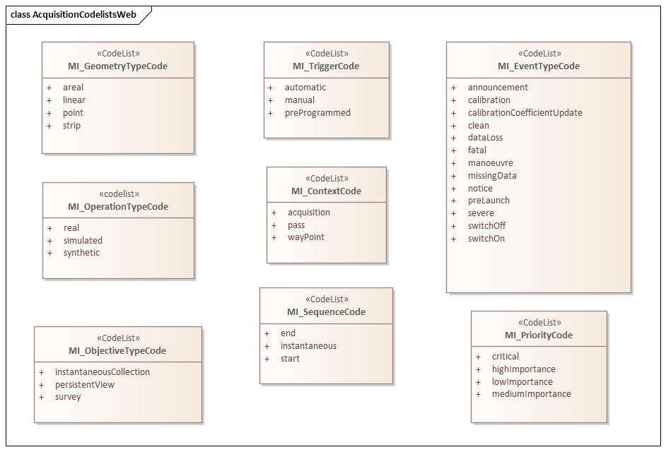

MAC 2.2 is an XML Schema implementation derived from ISO ISO 19115-2, Geographic Information - Metadata - Part 2: Extensions for acquisition and processing, Clause 6.3.2. It includes information related to acquisition platforms, instruments, operations and other details. The XML schema was encoded using the rules described in ISO/TS 19139:2007, Clause 8.
The namespace URI for mac 2.2 is https://schemas.isotc211.org/19115/-2/mac/2.2.
mac.xsd is the XML Schema document to be referenced by XML documents containing XML elements in the mac 2.2 namespace or by XML Schema documents importing the mac 2.2 namespace. This XML schema includes (indirectly) all the implemented concepts of the mac namespace, but it does not contain the declaration of any types.
acquisitionInformationImagery.xsd implements the UML conceptual schema defined in ISO 19115-2, Geographic Information - Metadata - Part 2: Extensions for acquisition and processing, Clause 6.3.2. It was created using the encoding rules defined in ISO 19118, ISO 19139. Within acquisitionInformationImagery.xsd the MI_Metadata class inherits attribute from MD_Metadata (../../../../19115/-1/mdb/1.3).
https://schemas.isotc211.org/19115/-2/mac/2.2.0/acquisitionInformationImagery.xsd contains the folowing classes:| Name | Standard Prefix | Namespace Location | Schema Location |
|---|---|---|---|
| Geographic Common Objects | gco | https://schemas.isotc211.org/19103/-/gco/1.2 | ../../../../191103/-/gco/1.2.0/gco.xsd |
| Geographic Markup Wrappers | gmw | https://schemas.isotc211.org/19136/-/gmw/1.2 | ../../../../19136/-/gmw/1.2.0/gmw.xsd |
| Geospatial MetaLanguage | gml | http://schemas.opengis.net/gml/3.2 | http://schemas.opengis.net/gml/3.2.1/gml.xsd |
| Language localization | lan | https://schemas.isotc211.org/19115/-1/lan/1.3 | ../../../../19115/-1/lan/1.3.0/lan.xsd |
| Metadata Common Classes | mcc | https://schemas.isotc211.org/19115/-1/mcc/1.3 | ../../../../19115/-1/mcc/1.3.0/mcc.xsd |
| Geographic Extent | gex | https://schemas.isotc211.org/19115/-1/gex/1.3 | ../../../../19115/-1/gex/1.3.0/gex.xsd |
| CITataion and Responsibility | cit | https://schemas.isotc211.org/19115/-1/cit/1.3 | ../../../../19115/-1/cit/1.3.0/cit.xsd |
Written by hand. Version: 2021-02-16